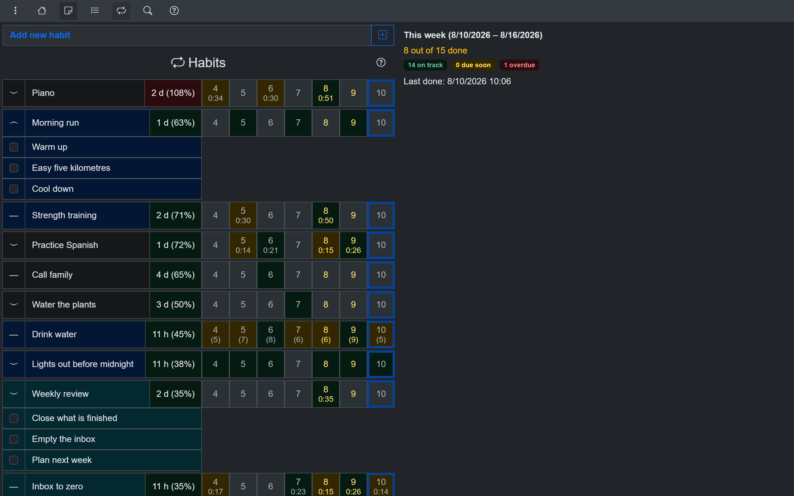
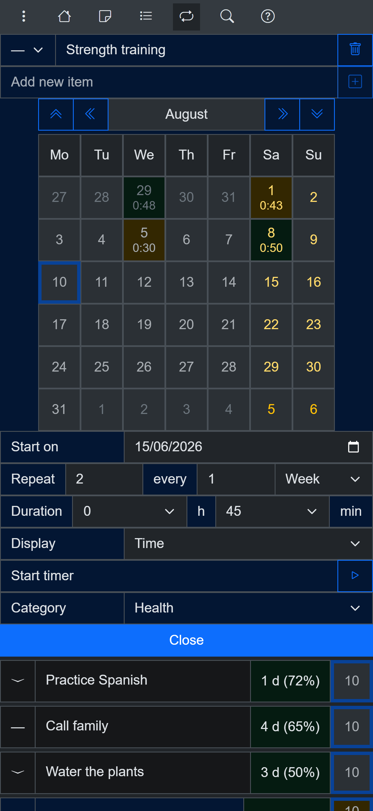
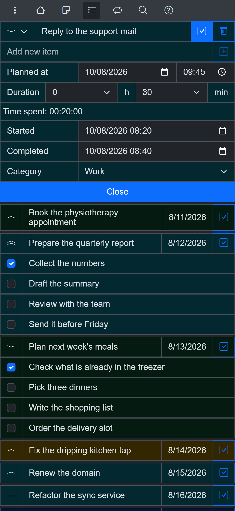
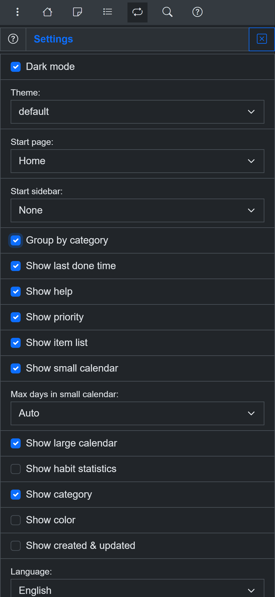

Loop Habit Tracker for iPhone and desktop: an open source alternative
What to use when you love Loop but you are not on Android
Loop Habit Tracker is one of the best habit trackers ever made: free, open source, no ads, no account, with over 10,000 stars on GitHub. If you are on Android and habits are all you want to track, Loop is hard to beat - and this page will not pretend otherwise.
But Loop is Android-only, by design. The two questions its users ask most have the same answer:
Is there a Loop Habit Tracker for iPhone?
No. There is no official iOS version of Loop Habit Tracker, and the developer has no plans for one. The apps with similar names on the App Store are unrelated.
Is there a Loop Habit Tracker for Windows, Mac or Linux?
Also no. Loop has no desktop version and no web version - your habits live on your Android phone and nowhere else.
That is where OpenHabitTracker comes in: a free, open source habit tracker built on the same philosophy as Loop - no streak guilt, no account, no ads, your data stays on your device - but with native apps on every platform.
Loop Habit Tracker vs OpenHabitTracker
| Loop Habit Tracker | OpenHabitTracker | |
|---|---|---|
| Price | free | free |
| Open source | ✅ GPL-3.0 | ✅ GPL-3.0 |
| Account required | ❌ no | ❌ no |
| Ads / tracking | ❌ none | ❌ none |
| Android | ✅ | ✅ |
| iPhone / iPad | ❌ | ✅ |
| Windows | ❌ | ✅ |
| macOS | ❌ | ✅ |
| Linux | ❌ | ✅ |
| Web / PWA | ❌ | ✅ |
| Sync between devices | ❌ manual backup files | ✅ optional self-hosted server (Docker) |
| Forgiving scoring (no streak reset) | ✅ habit strength algorithm | ✅ elapsed time vs desired interval |
| Streaks | ✅ shown in statistics | ✅ opt-in, off by default |
| Home screen widgets | ✅ | ❌ |
| Notification reminders | ✅ | ❌ overdue habits are highlighted instead |
| Charts and statistics | ✅ mature, detailed graphs | ✅ basic weekly stats |
| Notes | ❌ | ✅ Markdown |
| Tasks / to-dos | ❌ | ✅ |
| Google Keep import | ❌ | ✅ |
| Languages | ~10 | 20 |
| Themes | limited | 26, dark and light |
To be clear about what Loop does better: its home screen widgets and notification reminders have no equivalent in OpenHabitTracker, its statistics graphs are more mature, and as a single-purpose Android app it is smaller and more focused. If those are your priorities and Android is your only device, stay with Loop.
The same forgiving philosophy, a different mechanism
Loop's habit strength algorithm is one of the most thoughtful answers to streak anxiety: consistency builds your score gradually, and missing a day dips it gradually instead of resetting it to zero.
OpenHabitTracker solves the same problem a different way. Every habit has a desired repeat interval, and the app tracks the time elapsed since you last completed it:
- A habit with a 10-day interval that is 2 days overdue is at 120%
- A habit with a 4-day interval that is also 2 days overdue is at 150% - relative to its schedule, it is more urgent
Each habit's badge shifts color with that percentage - on track, approaching the interval, overdue (green, amber and red in the default theme) - so the habit list itself works as a gentle reminder of what is most overdue, without a single notification. Missing a day never resets anything; the percentage just grows a little.
And streaks? OpenHabitTracker shipped for two years without them. They were added in version 1.2.2 only because a user asked for them on GitHub - and they are opt-in, off by default, tucked away in the habit statistics. Nothing resets to zero, nothing guilts you.
Screenshots
Desktop:
{kind=link}

Habit list on desktop - overdue habits are highlighted
Phone:
{kind=link}

The same habits on a phone
{kind=link}

Tasks and notes are built in too
{kind=link}

Themes, languages, customization
Try it on the platform Loop doesn't cover
Use OpenHabitTracker in your browser
No install, no account - the PWA keeps all data on your device. Or get the native app:
iOS - App Store:
Windows - Microsoft Store:
macOS - Mac App Store:
Linux - Flathub:
Linux - Snap Store:
Android - Google Play:
The honest verdict
- Stay with Loop if you are Android-only and widgets, notification reminders and detailed graphs matter to you. It is an excellent app.
- Try OpenHabitTracker if you want your habits on iPhone, desktop or the web, if you want optional sync across devices through a self-hosted server, or if you want notes and tasks living next to your habits.
Both are free and open source, so trying costs nothing but a few minutes. You can read the OpenHabitTracker source on GitHub or ask questions on Reddit.